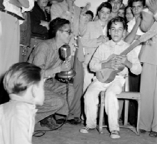

Pedrito Díaz:
Manos de Plomo en una Guitarra Olvidada
Trapos y Helechos 19 (10-2001): 12-14
Fotos en Color: E.
Mendoza, 2001
Fotos en B y N: Sarita Mendoza, 1956
 1
1
El instrumento más difundido mundialmente, si no contáramos a la
voz humana, es la guitarra. En Venezuela, país de la más diversa
y rica conformación musical e instrumental, podemos valorarnos
frente al mundo con el incomparable cuatro, o con la rica
percusión afro-venezolana, o las recias bandolas, pero quizás
gane al final el instrumento real: el arpa en sus dos versiones,
central y llanera.
Igualmente, no
deberíamos fijar nuestra identidad musical en el Joropo Llanero,
como nos hemos acostumbrado, ya que este baile es mitad
colombiano y además dejaríamos afuera otras músicas o géneros de
nuestra región de similar importancia que tienen poco en común
con el arpa, maracas y el cuatro. A nivel comercial, la salsa en
manos de Oscar D’León es sin duda el sonido “venezolano” con
mayor despliegue mundial, a pesar de que este derivado del son
cubano con aliño del Bronx nada tiene que ver con un desarrollo
Made in Venezuela.
Curiosamente,
nuestro país es reconocido y admirado musicalmente en el ámbito
internacional no a través de sus tradiciones populares sino por
un instrumento que mantiene un perfil muy bajo dentro del
folklore venezolano: la guitarra española. Podríamos añadir a
manera de tímida aclaratoria, para no destapar la olla, que en
política cultural se maneja ahora más la representación de la
actividad musical venezolana en manos de las orquestas
sinfónicas juveniles que por cualquier otro género musical, aún
cuando estas orquestas interpreten a muy pocos compositores
venezolanos en su repertorio habitual. En este caso, el
instrumento típico venezolano, si se tuviera que
escoger uno sólo, ¡sería el violín!
La guitarra es
tocada en el globo entero y, en donde se estudie con
profundidad, tarde o temprano sonará de sus cuerdas un vals de
Antonio Lauro, Hecho en Venezuela. La dialéctica entre la
asimilación internacional de un producto regional oscila entre
su capacidad de difusión a través de un instrumento globalizado
y la originalidad del producto que permita identificarlo con su
procedencia regional, indiferente a la materia de la que esté
hecho. El cuatro, más venezolano que la guitarra española,
presenta dificultades para internacionalizarse por su técnica
particular de la mano derecha que no es conocida fuera de las
fronteras venezolano-colombo-trinitarias. Ayuda, por supuesto,
la difusión a través de un gran artista virtuoso que haga un
impacto lo suficientemente atractivo para enganchar la atención
mundial. Así ocurrió en el momento preciso con Alirio Díaz a
favor de la música de Lauro que sólo él manejaba como gran joya
secreta de los encores en sus incontables conciertos por todo el
mundo. Él mismo se encargó de llevar las partituras de Lauro a
editoriales extranjeras para auspiciar su efecto multiplicador.
Si no fuera por Alirio, Lauro no hubiera tenido la importancia
que mantiene hoy en día como repertorio de facto de los
guitarristas en todo el mundo.
Sorprende que
el género por el cual se conoce más a la guitarra venezolana de
Lauro es el vals venezolano, entre ellos “Natalia” y no tanto
por sus piezas más vernáculas como el “Seis por Derecho,” el
“Merengue” o el “Pasaje Aragüeño.” La producción de Lauro es
mayormente en el género de vals, ritmo casi con la exclusividad
de la producción venezolana de piano de salón del siglo XIX y
con él logró piezas bellas y de alta exigencia técnica
guitarrística. El Pasaje Aragüeño fue publicado sólo hace un año
(Caroní Music C.A., Caracas), ya que Lauro nunca la escribió en
papel y su alumno Luis Zea la transcribió de una grabación en
cassette de una ejecución casual del maestro.
El pasaje
aragüeño junto al golpe tuyero constituye un género del joropo
venezolano conocido como el joropo central de la región de los
estados Aragua y Miranda. Este se desenvuelve principalmente a
través de la ejecución del arpa central de cuerdas de nylon y
metal junto al cantante que simultáneamente canta y toca las
maracas - sin el cuatro - a diferencia del joropo llanero.
Existe joropo central tocado además en el cuatro, o en la
armónica, acordeón, bandola o guitarra. Es una tradición viva y
activa, sin apego al calendario religioso, con la cual las
personas bailan los fines de semana, días de fiesta, en
reuniones familiares o en locales comerciales. Se escucha en la
radio y los músicos pueden vivir profesionalmente de su arte.
A pesar de ser
uno de los géneros del folklore venezolano de más belleza y
elaboración, en mi opinión, poco se conoce fuera de los cultores
en su región y de él poco se ha escrito. Persiste como un
submundo entre otros niveles más preponderantes y simultáneos,
incluso dentro de la gran urbe de Caracas. Del joropo central en
la guitarra, aún menos se sabe y lamentablemente está en proceso
de extinción. La única literatura musical para la guitarra
referente a esta tradición es el arriba mencionado “Pasaje
Aragüeño” de Lauro, con la suerte de que sobrevivió la
desaparición de su autor en un cassette fortuito.
Si buscáramos
una guitarra muy venezolana, ésta sería la guitarra tuyera o
central.

21
Pedrito Díaz nació el 19 de mayo de
1941, en San Antonio de los Altos, estado Miranda. A los once
años, en 1952 ganó el Primer Premio en un concurso musical
organizado por varios intelectuales recién mudados a este
pueblito idílico en los Altos Mirandinos, quienes quisieron
aportar a las celebraciones de las fiestas patronales en su
gratitud por encontrar la paz dentro del tumulto del régimen del
dictador Pérez Jiménez. Cantando y tocando el cuatro Pedrito se
ganó trescientos bolívares con un instrumento regalado por su
papá, ejecutando su propio arreglo de una pieza llamada “La
Chamiza.”

Su padre Andrés
Díaz tocaba el cuatro, la guitarra, mandolina, la bandola y el
violín, e inició a Pedrito con unos acordes en el cuatro en medio
de reuniones familiares de tíos en las cuales la música y el baile
era la principal actividad. Pedrito aprendió por su cuenta a
dominar el cuatro, la guitarra y más tarde el tres cubano, y a los
ocho años ya los ejecutaba con ágil versatilidad.
Antes de su
cumplimiento con el ejército, por los años sesenta, empezó a
tocar en casas de familia, en plazas y bailes, y formó parte de
un grupo de “música rítmica” con el nombre de “Platinado.” Lo
formaban la trompeta, saxofón, steel-pan, tres y batería, y
amenizaban fiestas tocando de todo. Por los mismos años, con
Vidal González, músico clave del pueblo de San Antonio, formó el
grupo “Piaroa” en el cual Pedrito tocaba el bajo o el cuatro
junto al arpa y a las maracas, colaborando especialmente en las
fiestas patronales y en los aguinaldos de diciembre. En 1971
funda de nuevo el segundo grupo “Piaroa” con Vidal González
ahora en el violín, el “Gordo” Miguel Espósito en el bajo, Cesar
Monroy en la percusión y Pedrito en la guitarra. Grabaron un
disco de 45 rpm junto al isleño Geraldo Ramayo cantando dos
piezas de Pedrito, “Morena” (balada) y “Yo Quiero” (bolero), con
la casa Discomoda.
Toca boleros,
música romántica y en especial joropo tuyero. Su guitarra
utiliza sólo cuerdas de nylon a pesar de la costumbre del joropo
central de incluir algunas cuerdas metálicas. Toca las seis
cuerdas de la guitarra con los cuatro dedos de la mano derecha y
no utiliza el capo, artefacto muy usual en los guitarristas
tuyeros para acomodarse al tono del cantante. No conoce ni toca
con otros guitarristas fuera de la zona, pero dentro de San
Antonio se relaciona y hace música con Vidal González, Guillermo
Ascanio y el taxista Reinaldo González, tío de Vidal.
Trabajó catorce
años en la Orfebrería Magdalozo en San Antonio y a partir de los
años setenta se inicia como plomero de la zona a tiempo
completo. Actualmente sólo toca en reuniones familiares y desde
hace mucho tiempo no toca más en público, según él, “por falta
de ánimo.” Dio clases a algunos muchachos de la vecindad que ya
están tan viejos como él, pero no continuaron con el
instrumento. Igualmente sus hijos no se animan a tocar. Pedrito
el Plomero es una persona muy querida por el pueblo de San
Antonio y es el último guitarrista tuyero que queda en la zona.
32
San Antonio, por su cercanía a la
capital (±14 Km), ha servido como ciudad dormitorio de las
personas que trabajan en Caracas a partir de la construcción de
la carretera Panamericana que las une. Este pueblito de
agricultores sufrió una desmedida y bizarra explosión
habitacional hace treinta años como coletazo de la bonanza
petrolera de aquel entonces, la corrupción incipiente y por la
ausencia completa de planificación urbana. Más recientemente, se
añadió a este desastre un abrupto crecimiento de instalaciones
comerciales. Constituido en su cuerpo nuevo por una clase media
de formación cultural urbana, es decir de alto contenido
cultural extranjero y mezclado, el antiguo pueblo canario
carece actualmente de cualquier rastro identificador
cultural que no sea foráneo.
 La
tradición de joropo tuyero que existía en 1956 (ver fotografía que
atestigua esta actividad), en arpa o en guitarra, ha desaparecido
completamente y no existe ningún lugar en donde pueda llevarse a
cabo. En comparación, otros pueblos cercanos a San Antonio en los
Altos Mirandinos como San Pedro de los Altos o la misma capital
Los Teques, mantienen los joropos todos los fines de semana. La
actividad musical de San Antonio en el presente es de índole
roquera y ésta es su nueva esencia identificadora.
La
tradición de joropo tuyero que existía en 1956 (ver fotografía que
atestigua esta actividad), en arpa o en guitarra, ha desaparecido
completamente y no existe ningún lugar en donde pueda llevarse a
cabo. En comparación, otros pueblos cercanos a San Antonio en los
Altos Mirandinos como San Pedro de los Altos o la misma capital
Los Teques, mantienen los joropos todos los fines de semana. La
actividad musical de San Antonio en el presente es de índole
roquera y ésta es su nueva esencia identificadora.
Las culturas
musicales son sinceras, son lo que son y no lo que debieran ser.
Cambian continuamente y se encuentran en un estado dinámico de
adaptación permanente a factores externos o a creadores
internos. Si bien existe una tendencia natural hacia la
estabilización (tradición) y regularización en el tiempo
(calendario), las músicas se encuentran en una interacción entre
los polos “permanencia-cambio” y en una dinámica entre “unicidad
y generalidad.” Muchos factores cohiben, estabilizan o
incrementan la transformación cultural de un ente musical en su
sociedad y en el tiempo, como por ejemplo la ausencia de
interferencia externa, aislamiento comunicacional y geográfico,
presencia de culto ligado a la manifestación, presencia de
cambios regulares climáticos, estabilidad económica (sea poca o
mucha), fuerte autoestima social y cultural, efectivo traspaso
de conocimientos entre generaciones.
En tal sentido,
cuando nos enfrentamos a una manifestación musical que está a
punto de extinción, como la guitarra tuyera de Pedrito en San
Antonio, resulta ingenuo pensar en el rescate de nuestros
valores a través de una proyección de segunda mano con un grupo
consolidado como una empresa para conciertos, producción de CD’s
y giras al exterior; o a través de un congelamiento en un
instituto en forma de grabaciones o transcripciones; o
publicaciones por académicos en escalafón o postgrados; o
exquisitos libros de mesa para las visitas. Se trata de un ser
vivo que respira de su entorno. No es la música la que se debe
rescatar o salvar, el enfoque se debe centrar en el ser vivo que
la hace y la siente. Si su contexto cultural y social niega su
sobrevivencia, no hay nada que hacer sino aceptar la verdad de
su extinción.
Por otro lado,
propongo como alternativa de pensamiento y solución a este
problema, dar prioridad al estudio y detección de los factores y
agentes que se puedan alterar en la comunidad para permitir el
libre re-crecimiento del cultor, sin ser tocado directamente,
tal como una matica media seca. Establecer con conocimiento de
análisis si su sociedad realmente quiere o no a la manifestación
que ella misma está dejando perder, si le hace falta. Determinar
el grado de cambio, si se incrementa peligrosamente, qué lo
afecta y qué podría moderar la transformación violenta del ente
cultural. Sólo así podremos hablar de rescate, en el sentido
integral de su existencia cultural.
Quizás aún esta
guitarra no ha muerto del todo.
_______________________________
1 Según entrevistas realizadas y grabadas en
video por el autor a Pedrito Díaz en San Antonio de los Altos,
entre noviembre, 2000 y julio, 2001,con la ejecución de su
guitarra.
2 Emilio Mendoza, extracto de la charla “Los
Medios de Comunicación y la Degradación Cultural,” impartida en
la Universidad de los Andes-Táchira, San Cristóbal, dentro del
ciclo de conferencias “Situación Actual de la Música Venezolana
en los Medios de Comunicación,” 20-7-2001.